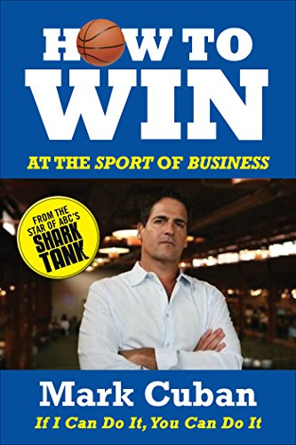

How to Win at the Sport of Business

Mark Cuban shares his wealth of experience and business savvy in his first published book, How to Win at the Sport of Business.
"It's New Year's resolution time, and Mark Cuban's new book offers the rationale for a good one."
—Business Insider
Using the greatest material from his popular Blog Maverick, Cuban has collected and updated his postings on business and life to provide a catalog of insider knowledge on what it takes to become a thriving entrepreneur. He tells his own rags-to-riches story of how he went from selling powdered milk and sleeping on friends' couches to owning his own company and becoming a multi-billion dollar success story. His unconventional yet highly effective ideas on how to build a successful business offer entrepreneurs at any stage of their careers a huge edge over their competitors.
"In short, [How to Win at the Sport of Business] exceeded...expectations. Short chapters...got right to the point and were not filled with 'stuffing'."
—Huffington Post